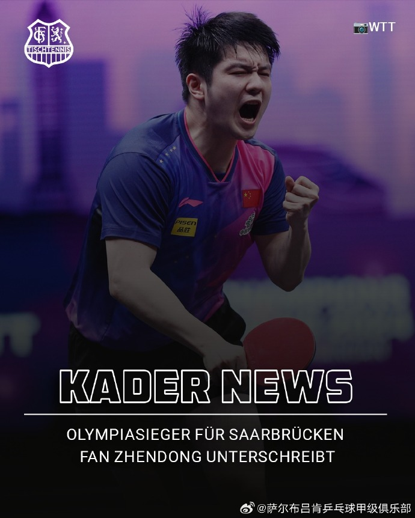
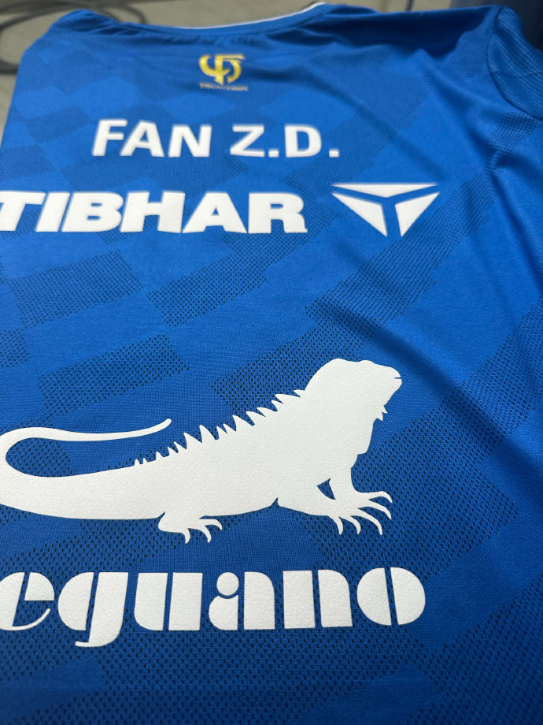
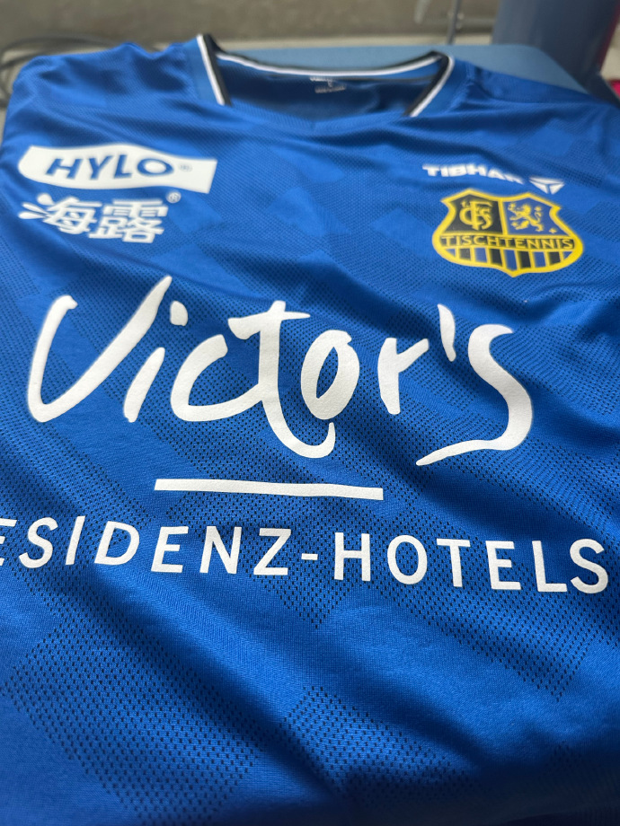

Welcome to Saarbrücken @樊振东 🔵⚫️



查看原始微博
基于微博数据的舆情分析报告
理解和尊重运动员本人意愿，并将全力支持和保障他保持良好竞技水平，为乒乓球事业再创辉煌。
我们相信，樊振东的加盟不仅是竞技层面的里程碑，还会为整个德国乃至欧洲的乒乓球联赛带来新的光彩。
与其道德绑架，不如思考如何优化运动员成长生态。
球迷认为樊振东加盟德甲是"打破WTT垄断的破局之举"，既规避了强制参赛罚款压力，又能通过高水平联赛保持竞技状态。
体育评论员王政解读樊振东加盟德甲联赛不仅仅是其个人职业发展的新突破，同时也是中国乒乓球国际化进程当中的重要一步。网友认为樊振东的加盟"激活了欧洲乒坛"，其商业价值带动俱乐部股价24小时涨超20%，球衣预售量激增，证明国际市场的认可。
媒体强调此为"运动员权益的实践"，樊振东主动选择职业路径(自带教练团队、独立签约)，打破传统举国体制依赖。业内认为德甲经历可为其未来奥运备战积累经验，但需平衡国内外赛程，如2025年乒超联赛第三阶段与德甲时间冲突。
部分网友指出该事件反映国内联赛整端:商业价值分配不公、饭圈文化干扰竞技精神，呼吁乒协改革。
部分网友认为国内培养的顶级选手为外国俱乐部效力，恐引发效仿潮，导致商业赞助转向国际市场。极少数极端言论指责樊振东"忘本""向钱看齐"，认为其背离"为国争光"使命。
球迷担忧长期海外参赛可能导致"国家队战术配合生疏"，影响洛杉矶奥运会团体赛表现。质疑其"奥运后近一年不参加国际赛，却加盟外国俱乐部"的合理性。
部分球迷认为国内"输球不行，赢球也不行"的环境是逼走顶尖选手的主因。